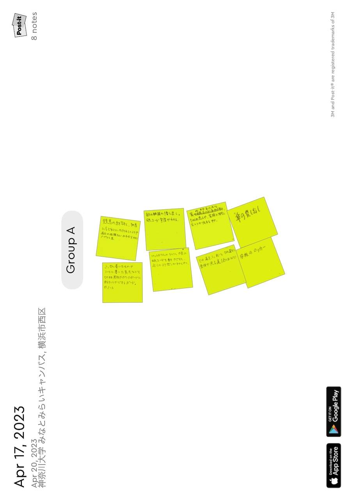
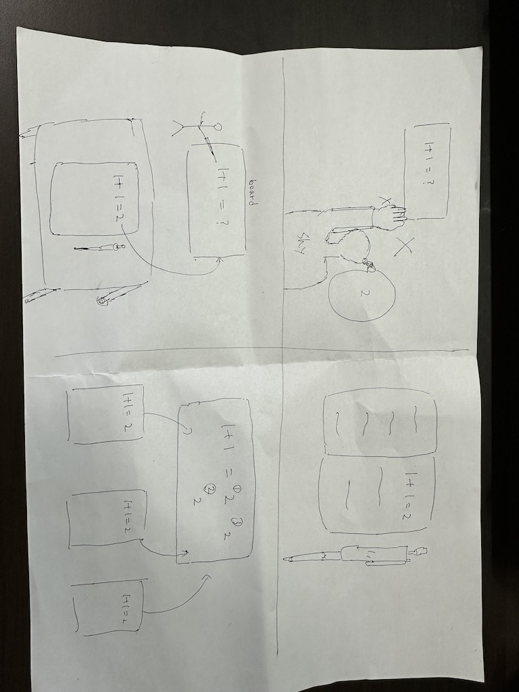

第二回
グループワークした内容（ポストイット画像）

二人だけのグループだったが様々な案が出た。特にデザイン系の案より、物や事柄の利便性を上げる案が多かったと思う。
デザイン系の案があまり出てこなかったので、他の人のアイデアを聞くのがとても楽しかった。
自分で考えたアイディア（スケッチ）

勇気がなくて手が挙げられない人や、意見が言いたいのに言えない人。風や病気などで学校を休み授業を受けられない人などいると思う。
そんな時にこのノートに書くだけで黒板に答えや言いたいこと、伝えたいことを映し出すことができる。
どんな答えが出たか、どんな意見があったかを集計し、授業の向上に役立てることもできる。
意見としてあったのが、これを作るのには莫大なお金がかかるのではないかというのがあったが確かになーと思ってしまった。